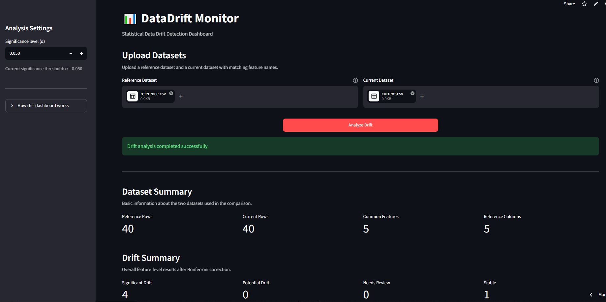
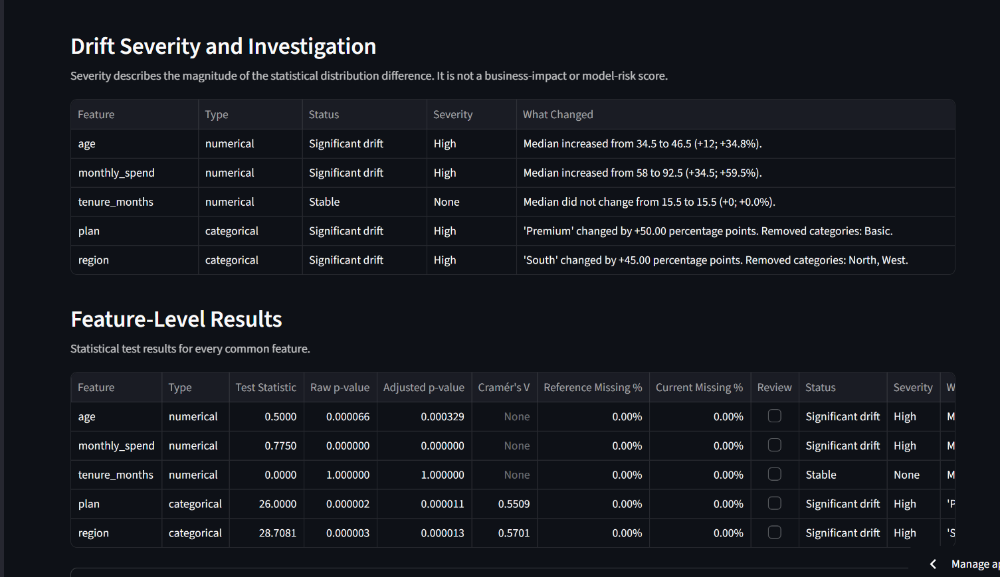
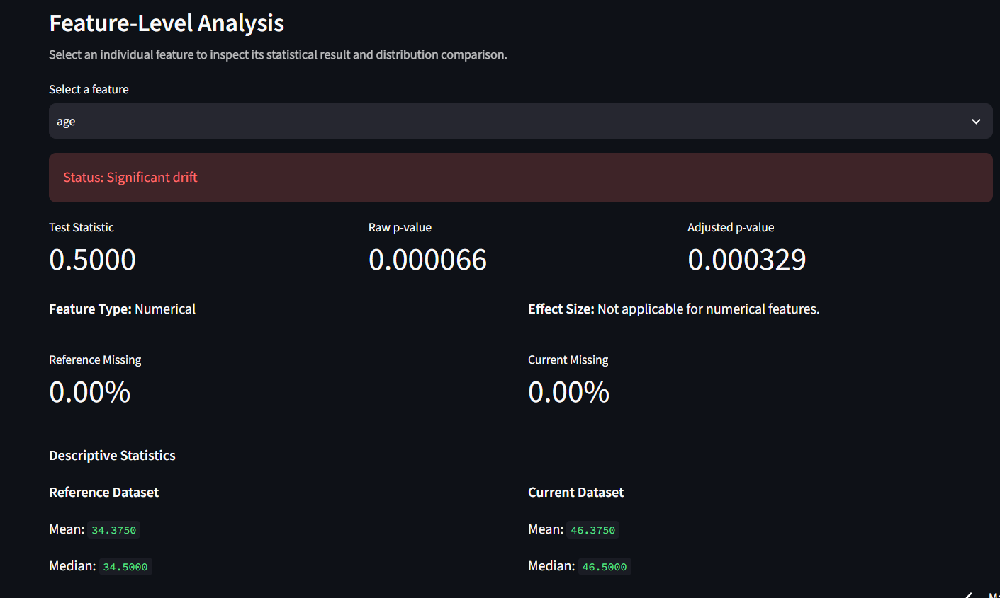

Two-sample KS test
Compares the reference and current distributions for numerical features.
Feature-level statistical monitoring
DataDrift Monitor compares reference and current datasets with statistical tests to identify feature-level distribution changes and help investigate what changed.
Distribution comparison
Statistical viewWorkflow
Each step keeps the comparison grounded in the uploaded datasets and documented statistical methods.
Provide a reference CSV and a current CSV with matching features.
Numerical and categorical columns are analyzed with their respective tests.
Identify results that remain significant after Bonferroni correction.
Inspect severity, distribution changes, categories, and relationships.
Download the full CSV results or a self-contained HTML report.
What data drift looks like
Drift is assessed by comparing the feature distributions in a reference dataset and a current dataset. A visual shift is informative, but the dashboard uses statistical tests to evaluate the comparison.
Illustrative only. The dashboard reports the corresponding feature-level test result.
Statistical methods
Compares the reference and current distributions for numerical features.
Compares category frequencies for categorical features.
Reports the categorical effect size alongside the chi-square comparison.
Adjusts p-values across the set of tested common features.
Phase 2 investigation
Use the existing dashboard to focus attention on observed changes while keeping statistical magnitude separate from business or model impact.
Describes the magnitude of a statistical distribution difference. It is not business impact, model risk, financial impact, or predicted model performance.
Summarizes numerical median movement or the largest categorical proportion change.
Shows new and removed categorical values alongside their proportion changes.
Reports substantial Pearson-correlation changes among numerical features. Association is not causation.
Export feature-level findings as CSV or a self-contained HTML report.
Supplied sample dataset
The repository's supplied reference.csv and current.csv produce four significant-drift results and one stable result at the default alpha setting.
Dashboard preview
Reference, investigation, and feature-level views from DataDrift Monitor.



Methodology
DataDrift Monitor compares common features between a reference and current dataset. Numerical missing values are excluded for the KS test and their percentages are reported. Categorical missing values are handled as an explicit [MISSING] category.
P-values indicate evidence against the corresponding null hypothesis, not the cause or practical consequences of a change. Bonferroni-adjusted p-values support multiple feature comparisons.
Ready to investigate
Run a reference-versus-current comparison in the existing dashboard.